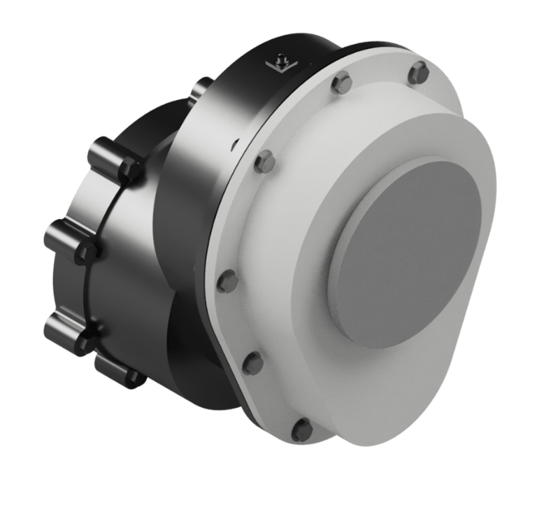

2024
Aero-Engine Speed Reducer for Wankel Engine
Designed a compact speed-reduction gearbox to couple a high-speed Wankel engine to a propeller, covering gear, shaft, bearing, sealing, lubrication and assembly-for-manufacture decisions.
Particulars

Placeholder image: replace with your CAD render of the final assembly.
The brief
A propeller is most efficient at a lower rotational speed than a compact Wankel engine. The challenge was to design a gearbox that reduces engine speed while staying compact, reliable and manufacturable. Constraints included a maximum gear centre distance of 90 mm and a minimum life target of 2000 hours.
What it had to do
My role
I worked across the gearbox as a system rather than isolated parts. That meant aligning the GP100 gear design with bearing selection, shaft sizing, seals, lubrication and assembly choices, then using DFA to iterate toward a more buildable and cost-conscious final design.
- Used GP100 to converge gear ratio, centre distance, helix angle and materials.
- Completed bearing life checks and shaft stress, fatigue, deflection and critical-speed validation.
- Specified coupling, spline/key interfaces, seals, lubrication and maintenance schedule.
- Ran a Lucas DFA analysis to reduce part count and improve manufacturability.
The technical work
Gear design (GP100)
Designed a helical gear pair targeting a 3.25:1 ratio, with a 20° helix angle choice as a balance between smoother operation and manageable axial load. Centre distance was constrained to ≤ 90 mm. Materials were selected with a stronger pinion than wheel (EN34 pinion, EN24 SH wheel), and a ground finish was chosen to support life.
Image to follow.
Bearings and life validation
Selected tapered roller bearings on the input shaft to handle combined radial and axial loads, and deep groove ball bearings on the output shaft where axial load was much lower. Bearing life calculations (L10h) exceeded the 2000 hour requirement for all selected bearings.
Image to follow.
Shaft design, stress, fatigue, deflection and critical speed
Sized shafts using GP100 gear forces and bending moment diagrams, then checked combined stress and fatigue. Materials were chosen for strength and toughness: AISI 4140 (input shaft) and AISI 4340 (output shaft). The combined-loading safety factors landed at 4.26 (input) and 5.56 (output), with very low predicted deflections and high critical speeds compared to operating speed.
Image to follow.
Torque transmission and coupling decision
Evaluated coupling options then moved toward a more robust approach for torque transfer. A clamping coupling was specified for the input side, and the final design introduced a spline coupling to improve load distribution and assembly symmetry compared with a keyway approach.
Image to follow.
Sealing and lubrication specification
Specified bore-sealing spring-loaded rotary shaft seals (nitrile/Buna-N with steel case) to prevent oil leaks, plus a casing gasket between housing halves. Lubrication was defined as splash lubrication with an oil trough. Pitch line velocity exceeded the threshold for a baffle, so a baffle was included for better oil control at speed.
Image to follow.
DFA iteration (Lucas method)
Used Lucas DFA to diagnose assembly difficulty and drive iteration. The final design improved design efficiency from 69.57% to 84.21% by reducing non-essential parts, reduced the fitting ratio from 6.2 to 4.93, and reduced manufacturing cost index from 131,459.5 to 113,635.7. Practical changes included reducing lip seals, standardising bolt sizes, aligning assembly directions, and moving from keyway to spline for better symmetry.
Image to follow.
Assembly and documentation
Produced an exploded view and assembly sequence for both the initial and final designs, with the key change being the spline-based coupling interface in the final design. This made the assembly process cleaner and reduced alignment issues.
Image to follow.
How it turned out
The final concept met the packaging and performance requirements, validated key failure modes (bearings, shafts, lubrication, sealing), and demonstrated a clear engineering iteration loop by using DFA to improve buildability and cost.
What I would change
The strongest upgrade would be a tighter "source of truth" model for the gearbox, one mass and energy and load set that feeds every decision. That would reduce rework between GP100 outputs, shaft/bearing checks, lubrication assumptions and casing packaging, and it would make design changes faster and safer.
- One parameter sheet driving gears, bearings, shafts and lubrication.
- Earlier interface freeze on coupling geometry and seal stack-up.
- More validation around vibration and thermal behaviour for the operating envelope.